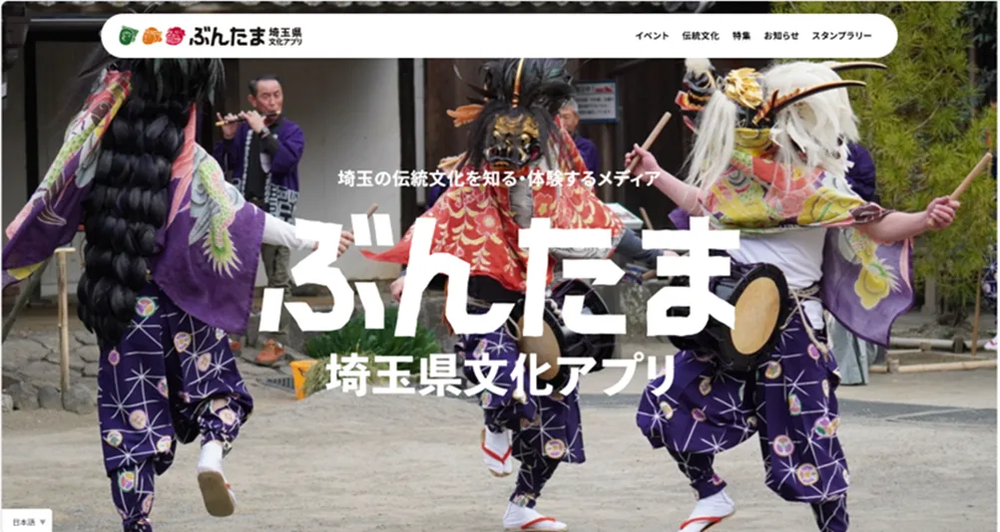
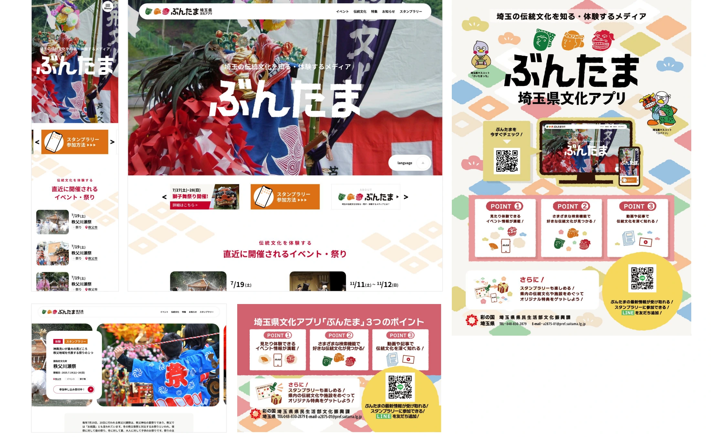

文化 / 埼玉
埼玉の伝統文化を知る・体験するメディアぶんたま


埼玉県の文化アプリ「ぶんたま」。地域の文化とアプリという接点を結ぶ制作実績です。
01 / 背景とテーマ
輪郭を与える
伝統文化は、関わっている人にとっては当たり前で、外から見ると入り口が分からない。市町村の保存会が守ってきた祭りや芸能を、誰もが手元で出会える形にしたのが「ぶんたま」です。
02 / SCHEMAの担当範囲
全体を整える
SCHEMAはアプリの企画・制作に加えて、運用のしくみを設計しました。市町村の担当課と保存会に入稿の権限を渡し、SCHEMA側で確認して公開する形。書き手を育てるための勉強会も定期的に行っています。
03 / 取り組みの視点
枠組みをひらく
情報を受け取る側だった地域の人が、つくる側にまわる。担い手が自分たちの言葉で発信できる状態をつくることで、事業が終わったあとも続いていく仕組みにしています。